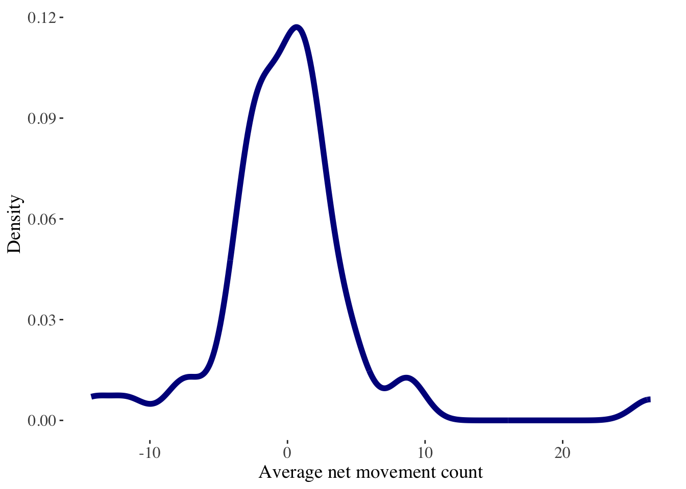
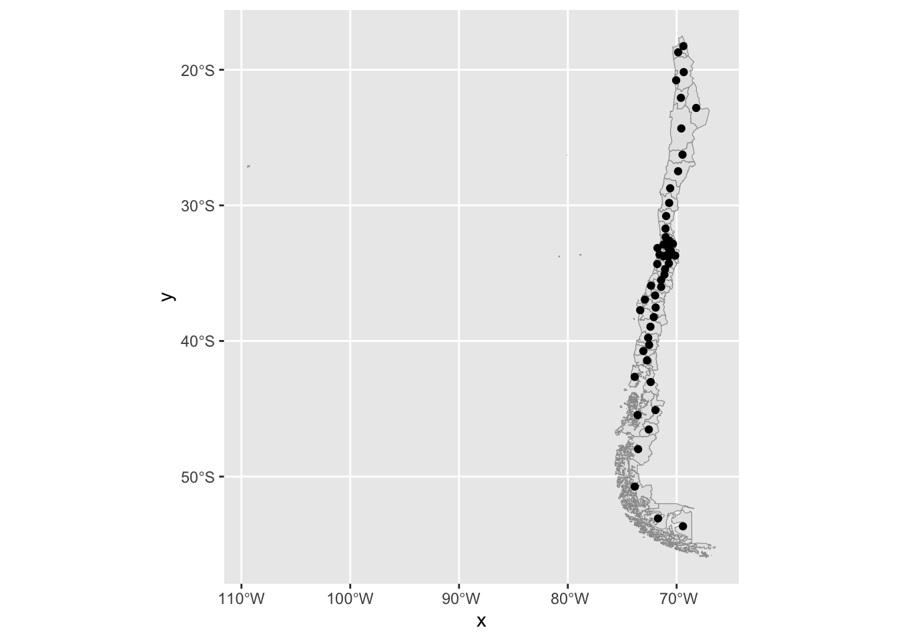
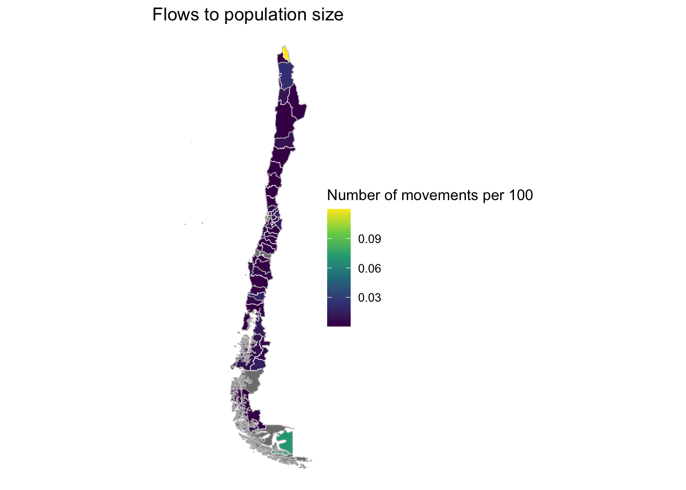

#clean environment
rm(list=ls())3 Spatial patterns
3.1 Aims
This session aims to provide an illustration on how to (1) analyse the spatial patterns of origin-destination mobility flow data extracted from Meta-Facebook; (2) compute basic area-based indicators of human mobility; (3) handle spatial datasets in R; and, (4) create geospatial visualisations to examine and effectively communicate human mobility patterns. We start by clearing our R environment by running:
3.2 Dependencies
We ensure to load the libraries below. A core area of this session is learning to work with spatial data in R. R offers an ecosystem of purposely designed packages for manipulation of spatial data and spatial analysis techniques. These ecosystem is known a r-spatial. Various packages exist in CRAN (The Comprehensive R Archive Network), including sf (E. Pebesma 2018, 2022a), stars (E. Pebesma 2022b), terra, s2 (Dunnington, Pebesma, and Rubak 2023), lwgeom (E. Pebesma 2023), gstat (E. J. Pebesma 2004; E. Pebesma and Graeler 2022), spdep (Bivand 2022), spatialreg (Bivand and Piras 2022), spatstat (Baddeley, Rubak, and Turner 2015; Baddeley, Turner, and Rubak 2022), tmap (Tennekes 2018, 2022), mapview (Appelhans et al. 2022) and more. A key package is this ecosystem is sf (E. Pebesma and Bivand 2023). R package sf provides a table format for simple features, where feature geometries are stored in a list-column.It appears in 2016 and was developed to move spatial data analysis in R closer to standards-based approaches seen in the industry and open source projects, to build upon more modern versions of open source geospatial software stack and allow for integration of R spatial software with the tidyverse (Wickham et al. 2019), particularly ggplot2, dplyr, and tidyr.
# data wrangling
library(tidyverse)
# spatial data wrangling
library(sf)
# data visualisation
library(viridis)
# format data visualisations
library(ggthemes)
library(patchwork)
library(showtext)
library(scales)
# create maps
library(leaflet)
library(tmap)
library(mapdeck)3.3 Data
Here we read all the data needed for the analysis. We use two types of data: (1) human mobility derived from Meta-Facebook users; and, administrative boundary data for Chile.
3.3.1 Meta-Facebook mobility data
We use origin-destination mobility flow data between Provinces in Chile. We use data for April 2020. For a detailed description of the Meta-Facebook mobility data, please see the Meta-Facebook data introduction. We start by reading the data. We filter only flows occurring within the boundaries of Chile. The dataset contains daily flow counts between provinces that occurred in April 2020 during three windows of time during the day; that is, between 12am, 8am and 4pm.
We have a look at the data frame. We can see that the data contains 20 columns and 29,491 origin-destination interactions capturing counts of movements between provinces.
# read
df20 <- readRDS("./data/fb/movement_adm/2020_04.rds") %>%
dplyr::filter(country == "CL")
glimpse(df20)Rows: 29,491
Columns: 20
$ GEOMETRY <chr> "LINESTRING (-69.96872527689874 -23.40113…
$ date_time <chr> "2020-04-01 00:00", "2020-04-01 00:00", "…
$ start_polygon_id <chr> "60845", "60862", "60845", "60862", "6086…
$ start_polygon_name <chr> "Antofagasta", "Cardenal Caro", "Antofaga…
$ end_polygon_id <chr> "60847", "60890", "60846", "60863", "6089…
$ end_polygon_name <chr> "Tocopilla", "Melipilla", "El Loa", "Colc…
$ length_km <dbl> 139.7543134, 24.0764953, 100.3339392, 24.…
$ tile_size <dbl> 11, 11, 11, 11, 11, 11, 11, 11, 11, 11, 1…
$ country <chr> "CL", "CL", "CL", "CL", "CL", "CL", "CL",…
$ level <chr> "LEVEL3", "LEVEL3", "LEVEL3", "LEVEL3", "…
$ n_crisis <dbl> 79, 18, 320, 71, NA, 369, NA, 20, 11, NA,…
$ n_baseline <dbl> 59.50, 25.50, 671.00, 132.75, NA, 559.25,…
$ n_difference <dbl> 19.50, -7.50, -351.00, -61.75, NA, -190.2…
$ percent_change <dbl> 32.231405, -28.301887, -52.232143, -46.16…
$ is_statistically_significant <dbl> 0, 0, 0, 0, 0, 0, 0, 0, 0, 0, 0, 0, 0, 0,…
$ z_score <dbl> 2.0148470, -0.6837043, -4.0000000, -1.261…
$ start_lat <dbl> -24.32798, -34.32667, -24.32798, -34.3266…
$ start_lon <dbl> -69.56718, -71.78028, -69.56718, -71.7802…
$ end_lat <dbl> -22.06894, -33.75413, -22.81611, -34.7036…
$ end_lon <dbl> -69.60081, -71.19829, -68.20015, -71.0631…We can identify the list of origin and destination provinces for which we can observe movement.
unique_origins <- unique(df20$start_polygon_name)
unique_destinations <- unique(df20$end_polygon_name)3.3.2 Meta-Facebook active users population
We will also use information on the number of Meta-Facebook active users population. The population Meta-Facebook active users can vary over time reflecting their varying patterns of usage and internet accessibility.
# read and select observations
pop20_df <- readRDS("./data/fb/population_adm/2020_04.rds") %>%
dplyr::filter(country == "CL")
# identify polygons
unique_areas <- unique(pop20_df$polygon_name)
# data overview
glimpse(pop20_df)Rows: 4,950
Columns: 14
$ spaco_id <dbl> 60870, 60859, 60893, 60862, 60872, 60850, 60869, 6086…
$ country <chr> "CL", "CL", "CL", "CL", "CL", "CL", "CL", "CL", "CL",…
$ polygon_name <chr> "Bío-Bío", "San Antonio", "Ranco", "Cardenal Caro", "…
$ level <chr> "LEVEL3", "LEVEL3", "LEVEL3", "LEVEL3", "LEVEL3", "LE…
$ date_time <chr> "2020-04-01 00:00", "2020-04-01 00:00", "2020-04-01 0…
$ n_baseline <dbl> 35459.9167, 25048.9167, 8326.1780, 6164.6667, 68088.1…
$ n_crisis <dbl> 34606, 18033, 7336, 4034, 60602, 6632, 11397, 11397, …
$ density_baseline <dbl> 0.014799224, 0.010454185, 0.003474937, 0.002572828, 0…
$ density_crisis <dbl> 0.014445053, 0.007527239, 0.003062154, 0.001683851, 0…
$ n_difference <dbl> -853.91667, -7015.91667, -990.17805, -2130.66667, -74…
$ percent_change <dbl> -2.40805018, -28.00774454, -11.89091959, -34.55695518…
$ clipped_z_score <dbl> -0.70353211, -1.45851614, -1.20047618, -1.29612464, -…
$ lat <dbl> 0, 0, 0, 0, 0, 0, 0, 0, 0, 0, 0, 0, 0, 0, 0, 0, 0, 0,…
$ lon <dbl> 0, 0, 0, 0, 0, 0, 0, 0, 0, 0, 0, 0, 0, 0, 0, 0, 0, 0,…3.3.3 Bing tiles
Meta-Facebook data captured during the COVID-19 outbreak were available into two formats, at the level of Bing tiles and at the level of administrative areas. While we will be using data at the provincial level, you may be interested in having a peek at the tiles. The Bing Maps Tile System was developed by Microsoft. This system defines a series of grids at different resolution levels over a rectangular projection of the world, comprising 23 different levels of detail (Schwartz et al. 2009). Each level is constructed by dividing the previous level into fourths, with the most granular level being Level 1. Meta-Facebook data are typically produced at Bing tile levels 13 through 16, where level 13 results in tiles that are about 4.9 x 4.9 km at the Equator.
Note
In our work in the project RECAST, we use this tile system and analyse the spatial patterns of human mobility in four Latin American countries, including Argentina, Chile, Colombia and Mexico. We expect to be in a position to share our final results with you soon. If you are interested, please do get in touch. For now, we share some of our share using Meta-Facebook data: Rowe et al. (2022), and research on the same line: González-Leonardo et al. (2022), González-Leonardo, Rowe, and Fresolone-Caparrós (2022), González-Leonardo and Rowe (2022), Wang et al. (2022) and Rowe, González-Leonardo, and Champion (2023).
We now read the shapefile containing the Bing tiles, simplify their boundaries and confirm it is valid. We display the boundaries for Chile and selected regions in the north, central and south of the country, to provide a better understanding of their size and areas of coverage.
# read bing tiles
bing_grid <- read_sf("./data/shp/grid/chile_grid.shp") %>%
st_simplify(preserveTopology =T, # simplify boundaries
dTolerance = 1000) %>% # 1km
sf::st_make_valid() # check the geometry is valid
Note
We created the Bing tiles. They are not available as polygons. They are only provided as rasters and not easily accessible.
3.3.4 Administrative areas
We now read the boundaries for Chilean provinces. Provinces are the second administrative level in the country. Provinces are amalgamations of municipalities or comunes, and groupings of provinces are known as regions. Chile is organised around 15 regions, 54 provinces and 346 municipalities - see here.
Let’s stop here and understand the spatial data frame or sf object we are reading. We can see it has 56 features (i.e. rows) and 5 fields (columns) within a bounding box which defines the area we can visualise on a map. You can see how the map of provinces below seems off to the right. That is because the bounding box has been set to include Chilean islands off of the coast of the country on the Pacific ocean. We will work on adjusting this at a later point in this session.
The line CRS or Coordinate Reference Systems identifies the projection system currently attached to the data. This would be the CRS that will be used if we decided to map the data. The component is incredible important if you intend to combine information from two spatial data frames. Ensure they are on the same CRS! A good idea is to used planar projection systems. Lovelace, Nowosad, and Muenchow (2019) provide a good discussion on the various projection systems.
shp_pro <- read_sf("./data/shp/adm/province/PROVINCIAS_2020.shp") %>%
st_simplify(preserveTopology =T,
dTolerance = 1000) %>% # 1km
sf::st_make_valid()
shp_proSimple feature collection with 56 features and 5 fields
Geometry type: MULTIPOLYGON
Dimension: XY
Bounding box: xmin: -109.4488 ymin: -55.98085 xmax: -66.42812 ymax: -17.4984
Geodetic CRS: SIRGAS-Chile 2002
# A tibble: 56 × 6
CUT_REG CUT_PROV REGION PROVINCIA SUPERFICIE geometry
* <chr> <chr> <chr> <chr> <dbl> <MULTIPOLYGON [°]>
1 08 081 Biobío Concepci… 3469. (((-72.77092 -37.002, -7…
2 01 014 Tarapacá Tamarugal 39428. (((-68.53576 -21.06468, …
3 04 042 Coquimbo Choapa 10131. (((-70.55491 -31.50954, …
4 05 054 Valparaíso Petorca 4589. (((-71.46609 -32.49606, …
5 10 101 Los Lagos Llanquih… 14857. (((-73.06627 -41.89869, …
6 11 114 Aysén del Ge… General … 11758. (((-71.75146 -46.33864, …
7 05 057 Valparaíso San Feli… 2636. (((-70.61116 -32.81214, …
8 12 121 Magallanes y… Magallan… 37193. (((-73.03711 -54.47267, …
9 13 136 Metropolitan… Talagante 581. (((-70.79251 -33.69482, …
10 15 152 Arica y Pari… Parinaco… 8142. (((-68.91415 -18.89034, …
# ℹ 46 more rowsWe will also use the regional boundaries for visualisation purposes. For now, we will just read them.
shp_reg <- read_sf("./data/shp/adm/region/REGIONES_2020.shp") %>%
st_simplify(preserveTopology =T,
dTolerance = 1000) %>% # 1km
sf::st_make_valid() 3.4 Spatial indicators of human mobility
This section focuses on computing various spatial indicators to analyse the patterns of human mobility. A key message to get across here is that digital footprint data do not capture the entire population living and moving in the country. We can capture signals or systematic trends, but there will be considerable amount of fluctuation of volatility. Such volatiblity may partly reflect the short-term variability in the patterns of human mobility and may also echo noise in the way in which the data are capture or process. Hence, we recommend to use indices and these indices should comprise aggregations of data in meaningful ways, based on geographical or temporal units.
3.4.1 Origin-based indicators
We start by computing indicators from the perspective of origin areas. We generate a set of five indicators capturing average and cumulative patterns at the monthly level. We compute the following indicators:
mean_perchange: is the average percent change in the count of movements from a given origin in relation to the baseline period over a month. It is computed as the average of the ratio of the number of movements from an area at time period t, minus the number of movements from an area during the baseline pre-pandemic period over the number of pmovements from an area during the baseline period.
mean_diff_flow: is the difference in the count of movements from a given origin in relation to the baseline period over a month. It is computed as the difference between the number of movements from an area at time period t, minus the number of movements from an area during the baseline pre-pandemic period.
sum_diff_flow: is the sum of the difference in the count of movements from a given origin in relation to the baseline period. It is computed as the sum of the difference between the number of movements from an area at time period t, minus the number of movements from an area during the baseline pre-pandemic period.
mean_outflow: is the average count of movements from a given origin at a give time period over a month.
sum_outflow: is the sum of the count of movements from a given origin at a give time period over a month.
origin_df <- df20 %>%
filter(start_polygon_name != end_polygon_name) %>%
group_by(start_polygon_name) %>%
dplyr::summarise(
mean_perchange = mean(percent_change, na.rm = T),
mean_diff_flow = mean(n_difference, na.rm = T),
sum_diff_flow = sum(n_difference, na.rm = T),
mean_outflow = mean(n_crisis, na.rm = T),
sum_outflow = sum(n_crisis, na.rm = T)
) %>%
ungroup()
tail(origin_df, 10)# A tibble: 10 × 6
start_polygon_name mean_perchange mean_diff_flow sum_diff_flow mean_outflow
<chr> <dbl> <dbl> <dbl> <dbl>
1 Santiago -70.6 -792. -1309523. 612.
2 Talagante -33.8 -263. -127657. 269.
3 Talca -52.4 -150. -70768 115.
4 Tamarugal 24.0 -53.0 -7261. 90.8
5 Tierra del Fuego -76.7 -19.8 -119. 12.2
6 Tocopilla 147. -4.23 -702. 38.5
7 Valdivia -75.8 -234. -65400. 48.3
8 Valparaíso -62.3 -350. -257762. 169.
9 Ñuble -62.5 -165. -56482. 60.4
10 Última Esperanza 1.77 -21.4 -21.4 10
# ℹ 1 more variable: sum_outflow <dbl>We observe the observations at the tail of the data frame. We observe that Santiago recorded an average reduction of over 70% in the count of movements from Santiago in April 2020, in relation to the baseline. Yet, the average size of this reduction in outflows seems to have been relatively small, involving 792 and reporting an average outflow of 612 movements.
3.4.2 Destination-based indicators
Mobility involves the spatial interaction between two areas. Mobility impacts both areas of origins and destinations (Rowe, Lovelace, and Dennett 2022). We often seek to understand both perspectives. Here we compute similar indicators to those calculated for the areas of origins. What interesting patterns can you see?
destination_df <- df20 %>%
filter(start_polygon_name != end_polygon_name) %>%
group_by(end_polygon_name) %>%
dplyr::summarise(
mean_perchange = mean(percent_change, na.rm = T),
mean_diff_flow = mean(n_difference, na.rm = T),
sum_diff_flow = sum(n_difference, na.rm = T),
mean_inflow = mean(n_crisis, na.rm = T),
sum_inflow = sum(n_crisis, na.rm = T)
) %>%
ungroup()
tail(destination_df, 10)# A tibble: 10 × 6
end_polygon_name mean_perchange mean_diff_flow sum_diff_flow mean_inflow
<chr> <dbl> <dbl> <dbl> <dbl>
1 Santiago -72.1 -850. -1336029. 639.
2 Talagante -30.3 -266. -128140 273.
3 Talca -52.1 -147. -68827 117.
4 Tamarugal 30.0 -49.4 -7360. 88.9
5 Tierra del Fuego -68.3 -16 -112 13.1
6 Tocopilla 63.3 -0.899 -165. 36.6
7 Valdivia -71.2 -230. -63284. 48.2
8 Valparaíso -66.2 -341. -245913. 170.
9 Ñuble -63.1 -158. -57870. 58.0
10 Última Esperanza -12.8 NaN 0 NaN
# ℹ 1 more variable: sum_inflow <dbl>3.4.3 Intraflows
Meta-Facebook mobility data also allow us to capture short-distance, local movements occurring within areas. Below we compute indicators to measure the extent of movement within Chilean provinces, adopting similar indices to those described above.
A key pattern is an increase in the number of movements within provinces in April 2020. This is likely to have been in response to COVID-19 restrictions constraining the amount of movement over long distances. If people moved, they mostly moved locally to go shopping, parks or for short walks. Yet, we also observe that some provinces report a decline.
origin_df <- df20 %>%
filter(start_polygon_name == end_polygon_name) %>%
group_by(start_polygon_name) %>%
dplyr::summarise(
mean_perchange = mean(percent_change, na.rm = T),
mean_diff_flow = mean(n_difference, na.rm = T),
sum_diff_flow = sum(n_difference, na.rm = T),
mean_intraflow = mean(n_crisis, na.rm = T),
sum_intraflow = sum(n_crisis, na.rm = T)
) %>%
ungroup()
tail(origin_df, 10)# A tibble: 10 × 6
start_polygon_name mean_perchange mean_diff_flow sum_diff_flow mean_intraflow
<chr> <dbl> <dbl> <dbl> <dbl>
1 Santiago 6.00 32253. 2902809. 585443
2 Talagante 24.0 3776. 339841. 19627.
3 Talca 4.48 1479. 133093. 34622.
4 Tamarugal -15.4 -612. -55063. 3342.
5 Tierra del Fuego 1.62 13.6 1228. 886.
6 Tocopilla 14.5 121. 10931 976.
7 Valdivia -10.6 -2895. -260512. 24506.
8 Valparaíso -1.27 -1295. -116524. 101255.
9 Ñuble -0.441 -158. -14207. 36391.
10 Última Esperanza -18.7 -164. -14750. 712.
# ℹ 1 more variable: sum_intraflow <dbl>3.4.4 Netflows
An additional key dimension of mobility is its net balance; that is, the extent to which human mobility acts to redistribute population across areas of the country. While some areas report population gains, other experience decline.
During the early stages of COVID-19, photo evidence of empty cities around the world poured over the Internet. Anecdotal evidence suggested the occurrence of an urban exodus, particularly from large cities as people sought more and greener spaces (see some our work on COVID and mobility, e.g. Rowe et al. 2022). At the same time, they sought to avoid high density areas, and they realised the need for bigger housing areas as they become multi-functional spaces for work, study and leisure for entire family units. People were said to have moved to sparsely populated rural areas, suburban spaces and more attractive migration destinations.
Below we compute a measure of the net balance of mobility flows between areas of origin and destination. We use the average number of movements into an areas, minus the number of movements out of that area. We have a look at the head of the data frame and observe that the average net mobility balance is virtually zero. However, at this point, we should recognise that while indicators are useful to measure different dimensions of human mobility, data visualisations are key to identify systematic patterns in the data.
# mean outflow by area
outflows_df <- df20 %>%
filter(start_polygon_name != end_polygon_name) %>%
group_by(start_polygon_name) %>%
dplyr::summarise(
mean_outflow = mean(n_crisis, na.rm = T)
) %>%
ungroup()
# mean inflow by area
inflows_df <- df20 %>%
filter(start_polygon_name != end_polygon_name) %>%
group_by(end_polygon_name) %>%
dplyr::summarise(
mean_inflow = mean(n_crisis, na.rm = T)
) %>%
ungroup()
# combine data frames
netflow_df <- cbind(inflows_df, outflows_df)
# mean netflow by area
netflow_df <- netflow_df %>%
mutate(
mean_netflow = mean_inflow - mean_outflow
) %>%
select(start_polygon_name, end_polygon_name, mean_inflow, mean_outflow, mean_netflow)
head(netflow_df) start_polygon_name end_polygon_name mean_inflow mean_outflow mean_netflow
1 Antofagasta Antofagasta 63.27513 66.00571 -2.730582
2 Arauco Arauco 91.14286 93.48276 -2.339901
3 Arica Arica 17.44444 20.16379 -2.719349
4 Aysen Aysen 28.47297 27.15385 1.319127
5 Bío-Bío Bío-Bío 77.86880 79.00000 -1.131195
6 Cachapoal Cachapoal 110.54008 112.71988 -2.179800Generally a useful graphical representation of the data is histograms or kernel density histograms. They are helpful to easily have an understanding of the distribution of mobility indicators. The histogram below reveals that while most areas report an average net mobility balance of zero, some areas display losses or gains of over 10 or 20 movements, respectively.
Note
ggplot is a primary tool for data visualisation in R. ggplot has a basic structure of three components:
The data: ggplot( data = data frame)
Geometries: geom_xxx( . )
Aesthetic mapping: aes(x=variable, y=variable)
Then you can work on the cosmetics of the figure such as changing the theme, axis, labels, etc.
ggplot(data = netflow_df) + # input the data
geom_density(aes(x = mean_netflow), # specify type of geom and aesthetics
alpha=0.5,
colour="darkblue",
linewidth = 2
) +
theme_tufte() + # choose the theme
theme(axis.text.y = element_text(size = 12), # edit labels format
axis.text.x = element_text(size = 12),
axis.title=element_text(size=14)
) +
labs(y = "Density", # label axis
x = "Average net movement count")
3.5 Mapping
Once you get a basic understanding of the data, you may want to have a more insightful representation of mobility indicators and add some context. Geospatial visualisations are great for these purposes, and for this end, cartography is key. A carefully crafted map can be an effective way of communicating complex information. Design issues include poor placement, size and readability of text and careless selection of colors. Have a look the style guide of the Journal of Maps for details, and also at the use of colours for effective communication. We recommend this piece by Crameri, Shephard, and Heron (2020) and Maceachren and Kraak (1997).
Note
For colour palettes, we recommend the following resources:
the R packages
viridisandRColorBrewerthe website color brewer 2.0
a publication by Crameri, Shephard, and Heron (2020)
3.5.1 Handling spatial data
But, before we get to map some data, there are some key elements we need to cover first. We will show you how to handle spatial data in R. As we indicated earlier in this section, sf is versatile R package to handle spatial data frames in R. A first key thing you need to know about spatial data is that they always have attached a CRS and ensuring there is a commonly shared CRS across your data is essential for mapping. We will be using a planar system, as opposed to a spherical system. We set our default CRS.
# set crs
crs_default = "EPSG:4326"To ensure you get a full understanding of the process of mapping, we will roll back and start from the beginning. We will re-read the data and re-compute the indicators, but this time we will convert our movement dataset into a spatial data frame by using the latitude and longitude of the origins as coordinates. This information will be used to convert our movement data frame into a spatial data frame using the latitude and longitude of the origins as geometry.
df20 <- readRDS("./data/fb/movement_adm/2020_04.rds") %>%
mutate(GEOMETRY = NULL) %>%
dplyr::filter(country == "CL") %>%
st_as_sf(coords = c("start_lon", "start_lat"),
crs = crs_default)
glimpse(df20)Rows: 29,491
Columns: 18
$ date_time <chr> "2020-04-01 00:00", "2020-04-01 00:00", "…
$ start_polygon_id <chr> "60845", "60862", "60845", "60862", "6086…
$ start_polygon_name <chr> "Antofagasta", "Cardenal Caro", "Antofaga…
$ end_polygon_id <chr> "60847", "60890", "60846", "60863", "6089…
$ end_polygon_name <chr> "Tocopilla", "Melipilla", "El Loa", "Colc…
$ length_km <dbl> 139.7543134, 24.0764953, 100.3339392, 24.…
$ tile_size <dbl> 11, 11, 11, 11, 11, 11, 11, 11, 11, 11, 1…
$ country <chr> "CL", "CL", "CL", "CL", "CL", "CL", "CL",…
$ level <chr> "LEVEL3", "LEVEL3", "LEVEL3", "LEVEL3", "…
$ n_crisis <dbl> 79, 18, 320, 71, NA, 369, NA, 20, 11, NA,…
$ n_baseline <dbl> 59.50, 25.50, 671.00, 132.75, NA, 559.25,…
$ n_difference <dbl> 19.50, -7.50, -351.00, -61.75, NA, -190.2…
$ percent_change <dbl> 32.231405, -28.301887, -52.232143, -46.16…
$ is_statistically_significant <dbl> 0, 0, 0, 0, 0, 0, 0, 0, 0, 0, 0, 0, 0, 0,…
$ z_score <dbl> 2.0148470, -0.6837043, -4.0000000, -1.261…
$ end_lat <dbl> -22.06894, -33.75413, -22.81611, -34.7036…
$ end_lon <dbl> -69.60081, -71.19829, -68.20015, -71.0631…
$ geometry <POINT [°]> POINT (-69.56718 -24.32798), POINT …We will also re-read our province boundary data and ensure it is on the same CRS.
shp_pro <- read_sf("./data/shp/adm/province/PROVINCIAS_2020.shp") %>%
st_simplify(preserveTopology =T,
dTolerance = 1000) %>% # 1km
sf::st_make_valid() %>%
st_transform(crs_default)Once we have read our input data, we will re-compute a few of mobility indicators.
# mean outflow by area
outflows_df <- df20 %>%
filter(start_polygon_name != end_polygon_name) %>%
group_by(start_polygon_name) %>%
dplyr::summarise(
mean_outflow = mean(n_crisis, na.rm = T)
) %>%
ungroup()
# mean inflow by area
inflows_df <- df20 %>%
filter(start_polygon_name != end_polygon_name) %>%
group_by(end_polygon_name) %>%
dplyr::summarise(
mean_inflow = mean(n_crisis, na.rm = T)
) %>%
ungroup() %>%
st_drop_geometry()
# combine data frames
netflow_df <- cbind(outflows_df, inflows_df)
# mean netflow by area
netflow_df <- netflow_df %>%
mutate(
mean_netflow = mean_inflow - mean_outflow
) %>%
dplyr::select(start_polygon_name, mean_inflow, mean_outflow, mean_netflow, geometry) %>%
rename(
polygon_name = start_polygon_name
)
head(netflow_df)Simple feature collection with 6 features and 4 fields
Geometry type: POINT
Dimension: XY
Bounding box: xmin: -73.58022 ymin: -45.45868 xmax: -69.56718 ymax: -18.71308
Geodetic CRS: WGS 84
polygon_name mean_inflow mean_outflow mean_netflow
1 Antofagasta 63.27513 66.00571 -2.730582
2 Arauco 91.14286 93.48276 -2.339901
3 Arica 17.44444 20.16379 -2.719349
4 Aysen 28.47297 27.15385 1.319127
5 Bío-Bío 77.86880 79.00000 -1.131195
6 Cachapoal 110.54008 112.71988 -2.179800
geometry
1 POINT (-69.56718 -24.32798)
2 POINT (-73.3454 -37.72772)
3 POINT (-69.85541 -18.71308)
4 POINT (-73.58022 -45.45868)
5 POINT (-71.92786 -37.53828)
6 POINT (-70.7088 -34.28421)Now let’s start mapping our data. Let’s do this by stage so you understand the key building blocks of this process. We first drawn the polygons representing the provinces of Chile.
p <- ggplot() +
geom_sf(data = shp_pro,
color = "gray60",
size = 0.1)
last_plot()Let’s add the centroids of the origins based on our movement data.
p <- p +
geom_point(data = netflow_df,
aes(geometry = geometry),
stat = "sf_coordinates"
)
last_plot()
Then we can remove the axes or background here:
p + theme_void()The map is placed towards the right. We can centre the map by adjusting the bounding box of the shapefile. We can do this by obtaining the current bounding box and adjusting the x left limit.
bbox_new <- st_bbox(shp_pro) # current bounding box
xrange <- bbox_new$xmax - bbox_new$xmin # range of x values
yrange <- bbox_new$ymax - bbox_new$ymin # range of y values
bbox_new[1] <- bbox_new[1] + (0.6 * xrange) # xmin - left
#bbox_new[3] <- bbox_new[3] + (0.5 * xrange) # xmax - right
#bbox_new[2] <- bbox_new[2] - (0.5 * yrange) # ymin - bottom
#bbox_new[4] <- bbox_new[4] + (0.5 * yrange) # ymax - top
bbox_new <- bbox_new %>% # take the bounding box ...
st_as_sfc() # ... and make it a sf polygon
ggplot() +
geom_sf(data = shp_pro,
color = "gray60",
size = 0.1) +
geom_point(data = netflow_df,
aes(geometry = geometry),
stat = "sf_coordinates",
size = .1
) +
coord_sf(xlim = st_coordinates(bbox_new)[c(1,2),1], # min & max of x values
ylim = st_coordinates(bbox_new)[c(2,3),2]) + # min & max of y values
theme_void()Something to note at this point is that two of the centroids lie outside the provincial polygons. This is difficult to visualise from the current map. We will find out this in a different way. We run a spatial join of the provincial polygons and our movement data frame, and check the provinces which were not matched. Below we can observe the result of this process. The provinces of Magallanes and Valparaíso were unmatched. That is because their centroids lie outside the polygon area. In the case of Valparaiso, islands attached to this province force the centroid to be position on the Pacific. In the case of Magallanes, the unusual shape of the province surrounded by fjords forces the centroid to be on the Pacific as well.
# spatial join
mob_indicators <- st_join(shp_pro, netflow_df)
# check if all polygons are matched
netflow_df$check <- netflow_df$polygon_name %in% mob_indicators$polygon_name
# identify unmatched polygons
netflow_df %>% select(polygon_name, check) %>%
filter(check == "FALSE")Simple feature collection with 2 features and 2 fields
Geometry type: POINT
Dimension: XY
Bounding box: xmin: -71.75919 ymin: -53.0857 xmax: -71.70694 ymax: -33.14564
Geodetic CRS: WGS 84
polygon_name check geometry
1 Magallanes FALSE POINT (-71.70694 -53.0857)
2 Valparaíso FALSE POINT (-71.75919 -33.14564)We therefore adjust these centriods and force them to be within the polygons of provinces.
# get coordinates
coordinates <- st_coordinates(netflow_df)
# combine data frames
netflow_df <- cbind(netflow_df, coordinates) %>%
rename(
long = X,
lat = Y
)
# list province to be adjusted
province_name <- c("Valparaíso", "Magallanes")
# adjust the centroid
for (area in 1:2) {
long <- netflow_df %>%
st_drop_geometry() %>%
dplyr::filter(polygon_name == province_name[area]) %>%
select(long) %>%
as.numeric()
lat <- netflow_df %>%
st_drop_geometry() %>%
dplyr::filter(polygon_name == province_name[area]) %>%
select(lat) %>%
as.numeric()
st_geometry(netflow_df[netflow_df$polygon_name == province_name[area], ]) <- st_sfc(st_point(c( long * 0.98, lat * 1 )))
}We re-join the polygon boundary data and our movement data frame and check the results. We can now see that all spatial units were matched.
mob_indicators <- st_join(shp_pro, netflow_df,
st_intersects)
netflow_df$check <- netflow_df$polygon_name %in% mob_indicators$polygon_name
netflow_df %>% select(polygon_name, check) %>%
filter(check == "FALSE")Simple feature collection with 0 features and 2 fields
Bounding box: xmin: NA ymin: NA xmax: NA ymax: NA
Geodetic CRS: WGS 84
[1] polygon_name check geometry
<0 rows> (or 0-length row.names)So far, we have only wrangled the data so we can start out mapping and spatial analysis.
3.5.2 Choropleths
We first try choropleths. Choropleths are thematic maps. They are easy to create but also to get wrong. We will look at a set of the principles you can follow to create effective choropleth maps. Here three more questions to consider:
What is being plotted?
What is the target audience?
What degree of interactivity we want to offer?
We will create maps of netflows, inflows and outflows. We will divide the data into categories. Categorising the data often facilites the identification of spatial patterns. There are different forms of organising these categories using quantiles, natural break points or more sophisticated clustering approaches. We will keep this simple and use seven categories. Feel free to explore the impacts on the map as these categories change.
# set categories
mob_indicators <- mob_indicators %>%
mutate(
netflow_class = mean_netflow %>% cut(7, dig.lab = 3),
inflow_class = mean_inflow %>% cut(7, dig.lab = 3),
outflow_class = mean_outflow %>% cut(7, dig.lab = 3)
)
# adjust labels for netflows
netflow_labels <- levels(mob_indicators$netflow_class)
netflow_labels <- gsub("\\(|\\]", "", netflow_labels)
levels(mob_indicators$netflow_class) <- netflow_labels
# adjust labels for inflows
inflow_labels <- levels(mob_indicators$inflow_class)
inflow_labels <- gsub("\\(|\\]", "", inflow_labels)
levels(mob_indicators$inflow_class) <- inflow_labels
# adjust labels for netflows
outflow_labels <- levels(mob_indicators$outflow_class)
outflow_labels <- gsub("\\(|\\]", "", outflow_labels)
levels(mob_indicators$outflow_class) <- outflow_labels
# change geometry
shp_reg <- shp_reg %>% st_transform(crs_default)Below we use ggplot to create our maps.
# map netflows
netflow_plot <- ggplot(data = mob_indicators, aes(fill = netflow_class)) +
geom_sf(col = "white", size = .1) +
coord_sf() +
scale_fill_brewer(palette = "RdBu", direction = -1) +
scale_color_manual(labels = netflow_labels) +
theme_map() +
theme(plot.title = element_text(size = 22, face = "bold"),
legend.position = "none") +
labs(title = "(a) Netflow",
fill = "Net count of moves") +
theme_void() +
geom_sf(data = shp_reg,
col = "grey70",
size = .5,
fill = "transparent") +
coord_sf(xlim = st_coordinates(bbox_new)[c(1,2),1],
ylim = st_coordinates(bbox_new)[c(2,3),2])
# map inflows
inflow_plot <- ggplot(data = mob_indicators, aes(fill = inflow_class)) +
geom_sf(col = "white", size = .1) +
coord_sf() +
scale_fill_brewer(palette = "PuRd", direction = 1) +
theme_map() +
theme(plot.title = element_text(size = 22, face = "bold"),
legend.position = "none") +
labs(title = "(b) Inflow",
fill = "Count of moves") +
theme_void() +
geom_sf(data = shp_reg,
col = "grey70",
size = .5,
fill = "transparent") +
coord_sf(xlim = st_coordinates(bbox_new)[c(1,2),1],
ylim = st_coordinates(bbox_new)[c(2,3),2])
# map outflows
outflow_plot <- ggplot(data = mob_indicators, aes(fill = outflow_class)) +
geom_sf(col = "white", size = .1) +
coord_sf() +
scale_fill_brewer(palette = "PuBu", direction = 1) +
theme_map() +
theme(plot.title = element_text(size = 22, face = "bold"),
legend.position = "none") +
labs(title = "(b) Outflow",
fill = "Count of moves") +
theme_void() +
geom_sf(data = shp_reg,
col = "grey70",
size = .5,
fill = "transparent") +
coord_sf(xlim = st_coordinates(bbox_new)[c(1,2),1],
ylim = st_coordinates(bbox_new)[c(2,3),2])
# combine plots
netflow_plot + inflow_plot + outflow_plotThe maps display the average count of movement across provinces in Chile. In relative terms, they indicate that some of central provinces experienced larger losses compared to northern and southern provinces. Central provinces also display the largest average counts of movement. This is expected as these areas concentrate most of the Chilean population, and larger population centres are expected to generate more movement.
Flow to Facebook population size
When using digital footprint data, a key concern is whether the data are biased or representative of the local populations (Rowe 2023). In the context of mobility, for instance, we would expect that we would observe more movement where we observe a larger number of Meta-Facebook active users. To explore this, we could analyse the ratio of movement over the number of Meta-Facebook active users by area. High spatial variability in this ratio would be evidence of biases in the Meta-Facebook data capturing mobility. We compute the average number of outflow movement over the average Meta-Facebook active user population by province. The results are quite revealing, showing remarkable little variation across provinces. This suggests very little evidence of biases in the Meta-Facebook data to capture mobility. Of course, this evidence only applies for Chile. But this analysis could be easily implemented on data for other countries.
# compute mean population
mean_fb_pop <- pop20_df %>% group_by(polygon_name) %>%
dplyr::summarise(
mean_pop = mean(n_crisis, na.rm = T)
) %>%
ungroup()
# join to mobility indicators data frame
mob_indicators <- left_join(mob_indicators, mean_fb_pop,
by = c("polygon_name" = "polygon_name")) %>%
mutate(
outflow_to_pop = (mean_outflow / mean_pop) # compute outflow to population
)
# map outflow_to_pop
ggplot(data = mob_indicators, aes(fill = outflow_to_pop)) +
geom_sf(col = "white", size = .1) +
coord_sf() +
scale_fill_viridis_c() +
theme_map() +
theme(plot.title = element_text(size = 22, face = "bold"),
legend.position = "none") +
labs(title = "Flows to population size",
fill = "Number of movements per 100") +
theme_void() +
geom_sf(data = shp_reg,
col = "grey70",
size = .1,
fill = "transparent") +
coord_sf(xlim = st_coordinates(bbox_new)[c(1,2),1],
ylim = st_coordinates(bbox_new)[c(2,3),2])
Changes over time
Maps are also an effective way of analysing spatial patterns over time. Below we show us how you can analyse the average count of net movement for April 2020 and April 2022 using ggplot. Different from the maps above, here we use a continous scale to map the data. We can see slight variations in the net balance of movement.
# read April 2022 data
df22 <- readRDS("./data/fb/movement_adm/2022_04.rds") %>%
mutate(GEOMETRY = NULL) %>%
dplyr::filter(country == "CL") %>%
st_as_sf(coords = c("start_lon", "start_lat"),
crs = crs_default)
# mean outflow by area
outflows_df <- df22 %>%
filter(start_polygon_name != end_polygon_name) %>%
group_by(start_polygon_name) %>%
dplyr::summarise(
mean_outflow = mean(n_crisis, na.rm = T)
) %>%
ungroup()
# mean inflow by area
inflows_df <- df22 %>%
filter(start_polygon_name != end_polygon_name) %>%
group_by(end_polygon_name) %>%
dplyr::summarise(
mean_inflow = mean(n_crisis, na.rm = T)
) %>%
ungroup() %>%
st_drop_geometry()
# combine data frames
netflow_df <- cbind(outflows_df, inflows_df)
# mean netflow by area
netflow_df <- netflow_df %>%
mutate(
mean_netflow = mean_inflow - mean_outflow
) %>%
dplyr::select(start_polygon_name, mean_inflow, mean_outflow, mean_netflow, geometry) %>%
rename(
polygon_name = start_polygon_name
)
# extract coordinates
coordinates <- st_coordinates(netflow_df)
# add coordinates
netflow_df <- cbind(netflow_df, coordinates) %>%
rename(
long = X,
lat = Y
)
# list province names
province_name <- c("Valparaíso", "Magallanes")
# loop to replace point geometries
for (area in 1:2) {
long <- netflow_df %>%
st_drop_geometry() %>%
dplyr::filter(polygon_name == province_name[area]) %>%
select(long) %>%
as.numeric()
lat <- netflow_df %>%
st_drop_geometry() %>%
dplyr::filter(polygon_name == province_name[area]) %>%
select(lat) %>%
as.numeric()
st_geometry(netflow_df[netflow_df$polygon_name == province_name[area], ]) <- st_sfc(st_point(c( long * 0.98, lat * 1 )))
}
# combine indicators with province polygons
mob_indicators22 <- st_join(shp_pro, netflow_df,
st_intersects)
# add year to data frame
mob_indicators$year <- "2020"
mob_indicators22$year <- "2022"
# combine data frames for 2020 and 2022
mob_indicators <- mob_indicators %>% select(names(mob_indicators22)) # remove columns to make data frames compatible
mob_indicators_20.22 <- rbind(mob_indicators, mob_indicators22)
Note
We note that facet_grid(.) is a useful function to know if you intend to produce figures by layers and these layers are defined by a different variable / column in your data frame. In our example, this is year.
# map netflows
ggplot(data = mob_indicators_20.22, aes(fill = mean_netflow)) +
geom_sf(col = "white", size = .1) +
coord_sf() +
scale_fill_gradient2(
low = muted("blue"),
mid = "white",
high = "red",
midpoint = 0,
space = "Lab",
na.value = "white",
guide = "colourbar",
aesthetics = "fill"
) +
theme_map() +
facet_grid(cols = vars(year)) +
theme(plot.title = element_text(size = 22, face = "bold"),
legend.position = "none") +
labs(title = "Netflow",
fill = "Number of movements") +
theme_void() +
geom_sf(data = shp_reg,
col = "grey70",
size = .5,
fill = "transparent") +
coord_sf(xlim = st_coordinates(bbox_new)[c(1,2),1],
ylim = st_coordinates(bbox_new)[c(2,3),2]) 3.5.3 Interactive mapping
An alternative way to analyse the data is using interactive maps. Interactive maps provide greater flexibility to explore the data by adding a base map for greater context. We use tmap for this task. tmap is a great package for mapping and you should probably add it to your toolbox if you are working on geographic information systems using R.
We map the average net count of movement for April 2022. We first enable interactivity by running tmap_mode("view") and then create the map. Using the menu on the left top of the map below, we can zoom in and out to explore the map and also change the base layer. We can also display or hide the colouring layers of our indicator. This allows to see the names of the areas experiencing net gains and losses of moves.
# create a map
tmap_mode("view") # enable interactivity
tm_shape(mob_indicators22) + # input data
tm_fill("mean_netflow", # draw and fill polygons
palette = "RdBu",
title = "Netflows")
Note
We use ttm() to switch off the interactive functionality of tmap.
# switch to other mode: "view"
ttm()tmap mode set to plotting3.5.4 Flow mapping
An additional key dimension of the analysis of origin-destination flow data is visually understanding the relationship between origins and destinations. This helps understanding the extent of interaction of individual areas with the rest of the country, and also informs how changes in a specific area may impact others - see for example Rowe and Patias (2020) and Rowe (2022). Flow maps are often used to visualise the complex network of mobility flows between areas. A recently developed tool for this end is mapbox. If you want to use mapbox you need to sign up. You can create an account for free to use some basic products. We can use mapbox through the mapdeck package in R.
So you have a start-to-end understanding of the process, we will begin from loading the input movement data. We compute the average count by origin-destination pair for April 2020, and prepare a data frame containing origin and destination coordinates.
# read data
df20 <- readRDS("./data/fb/movement_adm/2020_04.rds") %>%
mutate(GEOMETRY = NULL) %>%
dplyr::filter(country == "CL")
# compute mean move by origin-destination pair
flow_df20 <- df20 %>%
filter(start_polygon_name != end_polygon_name) %>%
group_by(start_polygon_name, end_polygon_name) %>%
dplyr::summarise(
mean_flow = mean(n_crisis, na.rm = T)
) %>%
ungroup()
# create a coordinate data frame for origins
origin_coordinate_df <- df20 %>%
dplyr::select( c(start_polygon_name, start_lat, start_lon)) %>%
distinct()
# create a coordinate data frame for destinations
destination_coordinate_df <- df20 %>%
dplyr::select( c(end_polygon_name, end_lat, end_lon)) %>%
distinct()
# join coordinates for origins and destinations
flow_df20 <- left_join(flow_df20, origin_coordinate_df, by = c("start_polygon_name" = "start_polygon_name"))
flow_df20 <- left_join(flow_df20, destination_coordinate_df, by = c("end_polygon_name" = "end_polygon_name"))For our illustration, we will focus on the province of Santiago.
df_santiago <- flow_df20 %>% dplyr::filter(start_polygon_name == "Santiago")
head(df_santiago)# A tibble: 6 × 7
start_polygon_name end_polygon_name mean_flow start_lat start_lon end_lat
<chr> <chr> <dbl> <dbl> <dbl> <dbl>
1 Santiago Antofagasta 33.3 -33.4 -70.5 -24.3
2 Santiago Arauco NaN -33.4 -70.5 -37.7
3 Santiago Arica 17.8 -33.4 -70.5 -18.7
4 Santiago Bío-Bío 18.5 -33.4 -70.5 -37.5
5 Santiago Cachapoal 292. -33.4 -70.5 -34.3
6 Santiago Cardenal Caro 13.3 -33.4 -70.5 -34.3
# ℹ 1 more variable: end_lon <dbl>To use mapbox, you will need to sign up for an account on the mapbox website. For this workshop, we have generated a key to share but we strongly suggest to create an account as the key will last for a certain period of time. The map generated is interactive. If you can explore it by clicking on it and moving your mouse. If you can also zoom in and out by double-clicking.
A striking pattern of the map below is the high degree of connectivity of Santiago with the rest of the country. Flows from Santiago not only extend to proximate and adjacent provinces but extend to far provinces in the north and south of the country.
key <- my_key ## put your own token here
flowmap <- mapdeck( token = key, style = mapdeck_style("dark"),
location = c(-3.7, 40.4), zoom = 6, pitch = 45) %>%
add_arc(
data = df_santiago,
layer_id = "arc_layer",
origin = c("start_lon", "start_lat"),
destination = c("end_lon", "end_lat"),
# stroke_from = "start_polygon_name",
# stroke_to = "end_polygon_name",
# stroke_width = "stroke",
palette = "reds",
legend = list( stroke_from = F, stroke_to = F ),
)
# plot the interactive map
flowmap